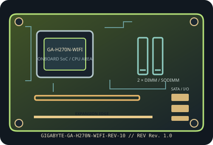

[ INDIVIDUAL COMPONENT // MOTHERBOARDS ]
GIGABYTE GA-H270N-WIFI (Rev. 1.0)
H270-based LGA1151 Mini-ITX board with dual-band wireless, Bluetooth and dual Gigabit Ethernet. This record covers GA-H270N-WIFI Rev. 1.0 and its manufacturer-listed CPU/BIOS compatibility.

IDENTIFICATION: Confirm the complete model suffix and PCB revision printed on the board. Select firmware and parts from the documentation for this exact revision; a matching socket or product family alone does not establish compatibility.
Specifications
| Exact model / PCB revision | GIGABYTE GA-H270N-WIFI (Rev. 1.0) |
|---|---|
| Processor / socket | LGA1151 socket supporting GIGABYTE-listed 7th- and 6th-generation Intel Core, Pentium and Celeron processors; check the board CPU support list and minimum BIOS for the exact CPU. |
| Chipset | Intel H270 Express. |
| Form factor | Mini-ITX, 170 × 170 mm. |
| Memory and slots | Two DDR4 dual-channel UDIMM slots, up to 32 GB; non-ECC unbuffered memory is standard; speed is CPU/chipset dependent (up to DDR4-2400 with supported 7th-gen CPU, lower with some 6th-gen CPUs). |
| Expansion | One PCIe 3.0 x16 slot; M.2 Socket 3 storage interface and separate M.2/socketed onboard wireless hardware. |
| Storage | Six SATA 6 Gb/s connectors plus rear-side M.2 Socket 3 supporting documented SATA/PCIe SSD types and sizes; consult the manual for shared-lane behavior and RAID modes. |
| Network and onboard I/O | Dual Intel Gigabit Ethernet, onboard dual-band 802.11ac Wi-Fi and Bluetooth 4.2, antenna connectors; Realtek HD audio and CPU-dependent video outputs. |
| Power connections | 24-pin ATX main power and CPU ATX12V/EPS input; use the Rev. 1.0 manual for exact connector pinout and PSU requirements. |
| BIOS / firmware | GIGABYTE UEFI DualBIOS with model-specific CPU support and BIOS download list. Confirm exact processor and minimum BIOS on the Rev. 1.0 support page before assembly. |
| Enclosure compatibility | 170 × 170 mm Mini-ITX board; compatible only with cases offering Mini-ITX mounting, full rear I/O access and adequate cooler/GPU clearance. Allow access to back-mounted M.2 and space to route Wi-Fi antenna leads. |
Compatibility and revision notes
H270 is a non-overclocking chipset. Keep model-specific lane-sharing notes in mind when populating M.2 and SATA storage; a physically fitting drive may disable or share a port.
Before assembly, verify the exact CPU support list and minimum firmware, memory generation and population order, storage lane sharing, add-in card dimensions, chassis standoffs and PSU leads in the cited revision-matched manual. Observe ESD precautions and never update with firmware for a similarly named board.
Installation and preservation
Inspect the PCB revision silkscreen, socket or soldered processor, memory slots, power connectors, storage sockets and rear-I/O ports before use. Record BIOS version, date/serial identifiers, installed accessories and test conditions; keep the board manual and firmware tied to its exact model and revision.
Manufacturer sources & manuals
- GIGABYTE — GIGABYTE GA-H270N-WIFI (Rev. 1.0) specificationsOfficial specification record for this motherboard and revision.
- GIGABYTE — GIGABYTE GA-H270N-WIFI (Rev. 1.0) manual, BIOS and support downloadsOfficial revision-specific support page; use its manual, CPU support list and firmware downloads to verify installation and compatibility.
Specifications above are a static reference summary. The matching manufacturer manual, PCB revision and support list are authoritative.